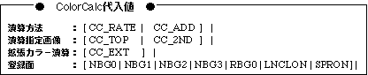

Return to previous page | Return to menu | Go to next page
void
Scroll function
Color calculation control set
void slColorCalc( flag )
Uint16 flag ;
flag Color calculation control parameter
Set parameters for color calculation.
None
For the parameter, substitute the values in the table below according to the function to be used.
For parameter details, see
“HARDWARE MANUAL vol.2” (VDP2 User's Manual: P241)
Please refer to.

Note) The above values are defined in “sl_def.h” included with the system.
Reference: Chapter 8 Scroll
slColorCalc